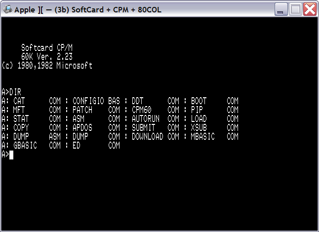

В эмулятор включена поддержка платы Microsoft Z80 Softcard, реализуемой с помощью модуля процессора из проекта fuse.
Использование этой платы позволяет запускать в эмуляторе Apple диски с операционной системой CP/M:

Модуль Z80 Softcard не содержит настроек пользователя.
См. также: Изменение конфигурации, Описание и настройка устройств, Поддерживаемое оборудование, Главное меню